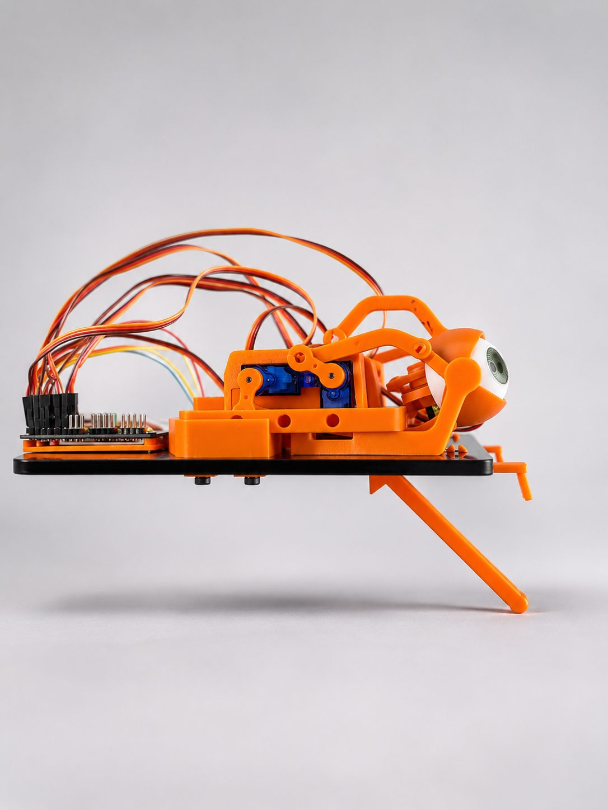
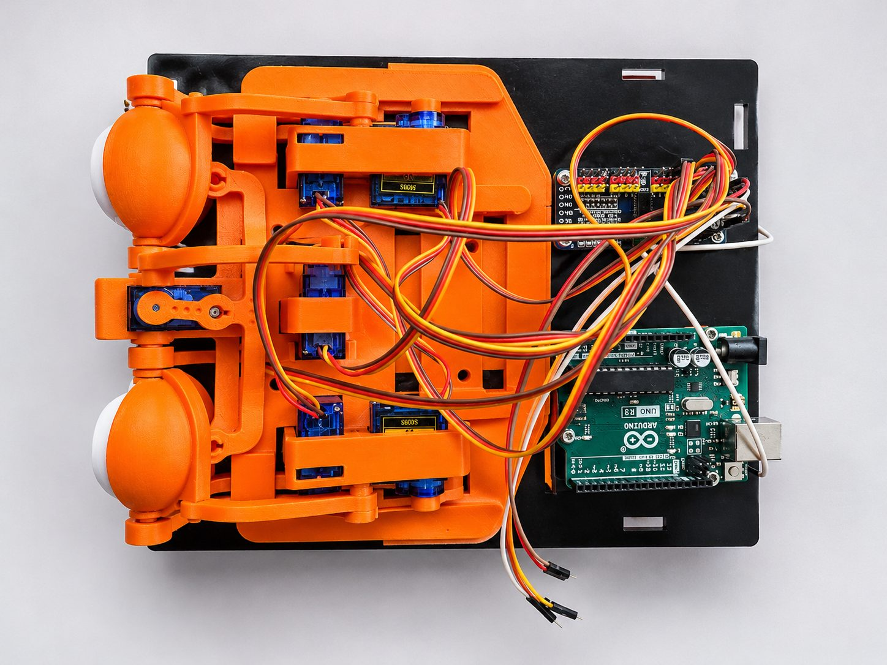
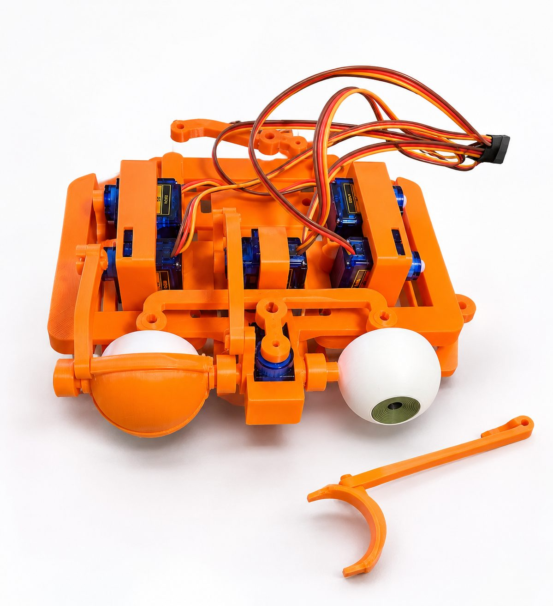
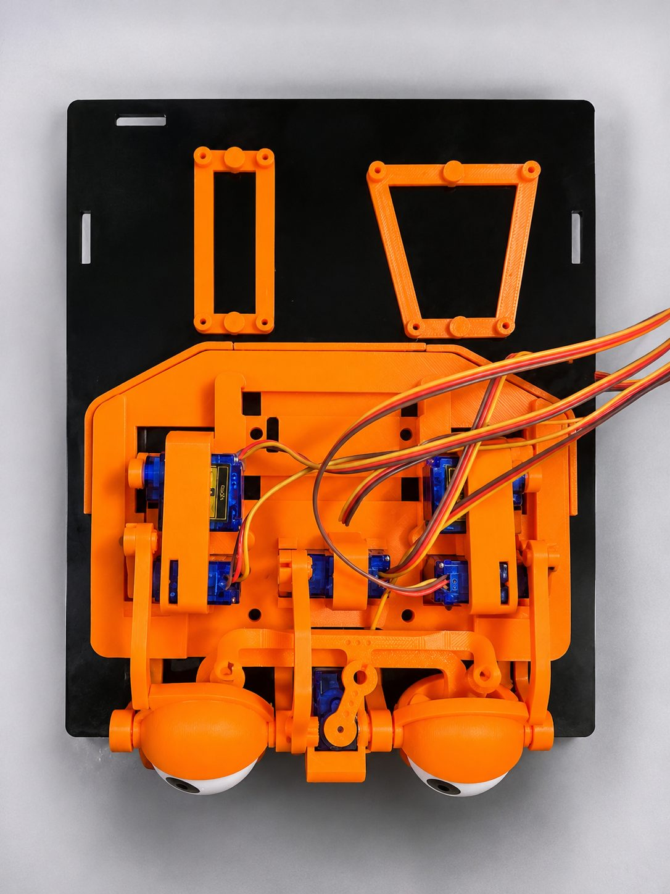
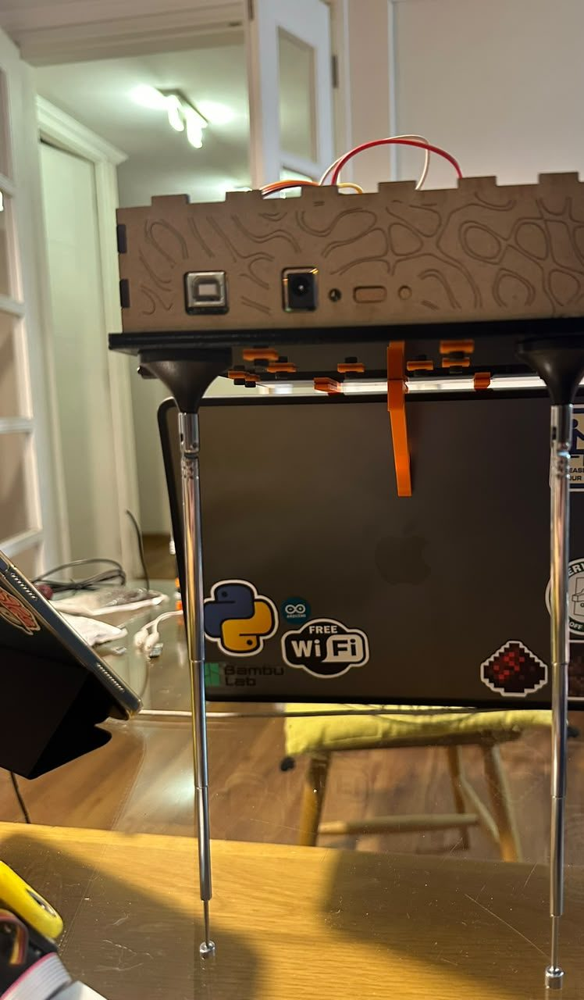
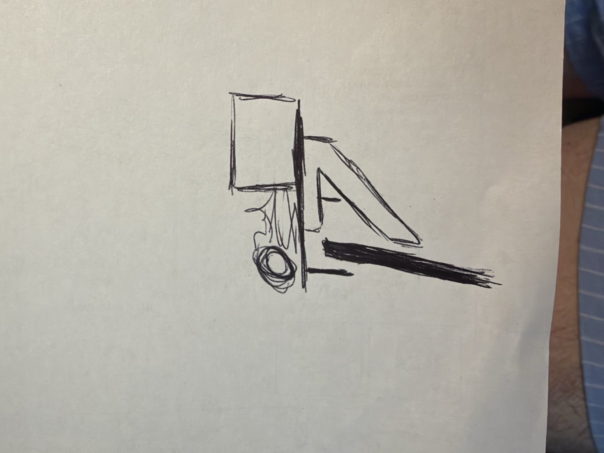

★ TALLER DE INTERFACES · INTERFAZ FÍSICA CON IA ★
ROBOT FACE
Una IA que te mira de vuelta. Ojos animatrónicos sobre un notebook que conversan por voz con Claude y expresan emociones con los párpados.
MARTIN DONOSO · LUIS-FELIPE BENÍTEZ
UAI · DESIGNLAB · 2026
Conversar con una IA es mirar una pantalla. ¿Qué pasa si la IA te mira de vuelta?
Diseñamos la interacción completa: un ciclo de vida, 16 expresiones sincronizadas con lo que dice, reconocimiento facial con consentimiento y la montura física en acrílico, MDF e impresión 3D, toda paramétrica.
INTERACCIÓN
- Duerme a los 10 s sin ver a nadie: cierra los ojos y ronca en pantalla. El ruido no lo despierta, a propósito, para que no reaccione a cualquier sonido de la sala.
- Despierta solo al ver una cara: entreabre los ojos, parpadea, mira a la persona y la saluda, por su nombre si la reconoce.
- Mira a quien habla: detecta caras y quién mueve la boca.
- Se calla si lo interrumpes (distingue tu voz del eco de la suya).
- Ignora voces del fondo si nadie frente a la cámara habla.
- Solo “piensa en voz alta” cuando le haces una pregunta.
- Personalidad: amigo chileno, sarcasmo cariñoso, respuestas cortas.
16 EXPRESIONES
Claude elige una emoción por frase. Los ojos la actúan justo al decirla y la boca en pantalla cambia de forma con el audio. Prueba cada una:
Los dos ojos parpadean siempre juntos. La asimetría queda solo para el guiño y los gestos que la necesitan: los parpadeos descoordinados se veían como una falla.

ÉTICA
- Pregunta por voz antes de recordarte y guarda la huella (128 números) solo en el computador.
- Te olvida si le dices “olvídame”.
- El escaneo guiado pide 6 ángulos con un marco que barre la cara.
- Reconoce combinando cara (70 %) y ropa (30 %). La ropa ayuda de lado o de lejos, pero una cara claramente distinta siempre gana.
CÓMO FUNCIONA
Cámara ─► seguir.py (YuNet · MediaPipe · SFace) ─► USB serie ─► Arduino UNO ─► I2C ─► PCA9685 ─► 6 × SG90
▲ │ UDP (expresiones, quién habla, caras)
│ ▼
Micrófono ─► hablar.py (Whisper · Claude · voz · boca) ◄──► API de Claude
│ UDP (forma de la boca)
▼
servidor.py ◄── página web + panel en vivo
EyeMech ε3.2 de Will Cogley: 6 servos SG90 (4 para los párpados, 2 para la mirada X/Y) controlados por un Arduino UNO y una PCA9685, calibrados servo por servo.
La mirada apunta a los ojos de la persona, no al centro de la cara: al principio miraba muy arriba.
Whisper transcribe ► Claude Haiku responde (rápido y barato, con caché de prompt) ► voz sintética ► boca animada que sigue el audio.
EL OBJETO
- DESCARTADA
Cabeza completa tipo personaje: tapaba demasiado y copiaba un personaje existente.
- DESCARTADA
Montura tipo cámara web con pinza articulada: la articulación no aguantaba el peso.
- DESCARTADA
Frente de MDF que tapaba el mecanismo: chocaba con los párpados al cerrar y con la pieza superior al mirar abajo.
- FINAL
Mecanismo a la vista sobre acrílico negro de 5 mm, ganchos a 15° en el borde de la pantalla y pata hasta la mesa con varilla M8, porque el peso le ganaba a la bisagra. La electrónica va en una caja de MDF de 3 mm con grabado de cerebro.
Todo es paramétrico en código (CadQuery): las piezas salen de scripts en Python a partir de medidas reales, revisan choques y se imprimen sin soportes.








